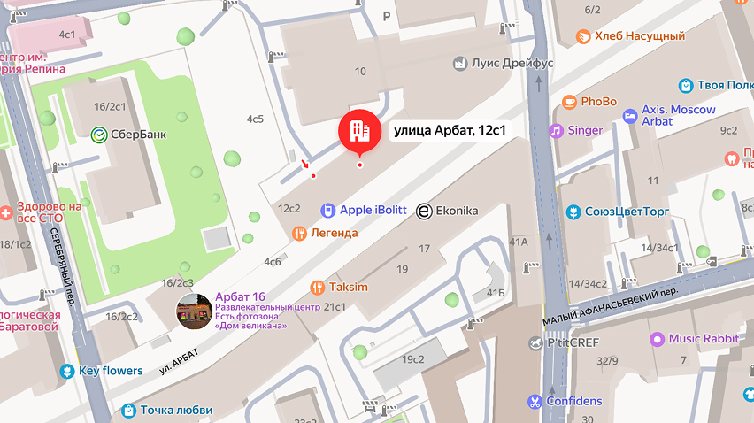

О нас
ToneCraft был основан в 2003 году группой музыкантов и энтузиастов,
увлечённых идеей сделать качественные музыкальные инструменты
доступными для всех. Первоначально стартовав как небольшой
интернет-проект с ассортиментом из десятка гитар и аксессуаров,
магазин быстро завоевал доверие благодаря честным ценам, детальным
обзорам и внимательному подходу к клиентам.
В 2015 году, в условиях роста интереса к домашнему музицированию, ToneCraft значительно расширил ассортимент — в него вошли электрогитары, клавишные, ударные установки, студийное оборудование и товары для звукозаписи. Были налажены партнёрские отношения с известными брендами, открыты склады в нескольких регионах, что позволило ускорить доставку.
Слоган компании: «Craft your sound»
В 2015 году, в условиях роста интереса к домашнему музицированию, ToneCraft значительно расширил ассортимент — в него вошли электрогитары, клавишные, ударные установки, студийное оборудование и товары для звукозаписи. Были налажены партнёрские отношения с известными брендами, открыты склады в нескольких регионах, что позволило ускорить доставку.
Слоган компании: «Craft your sound»
Как нас найти
Физический адрес: г. Москва, ул. Арбат 12с1

Часто задаваемые вопросы
Обычно доставка занимает от 2 до 7 дней в зависимости от региона и
выбранного способа доставки.
После оформления заказа вы получите уведомление о готовности.
Забрать заказ можно в нашем магазине по адресу: г. Москва, ул.
Арбат 12с1.
Если ваш заказ задерживается, свяжитесь с нашей службой поддержки
по телефону или через форму обратной связи на сайте.